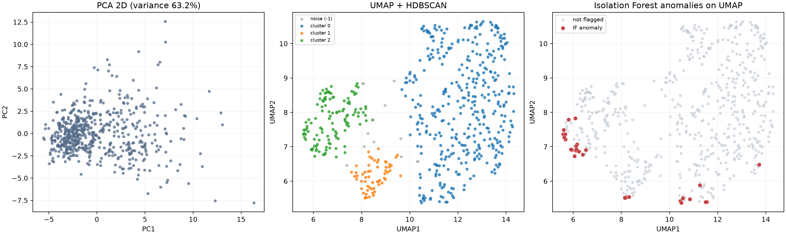
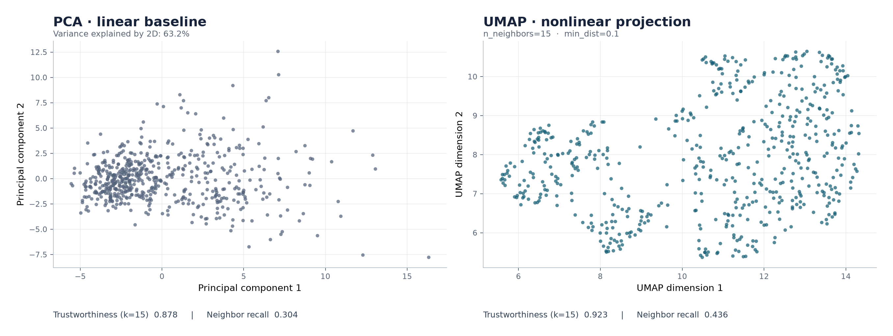

Research note / Class 2 PM / Unsupervised learning
Structure is visible.
Its meaning is conditional.
UMAP preserved more local neighborhoods than PCA and revealed three stable two-dimensional clusters. Yet the same density-clustering settings found no clusters in the original feature space. The representation, not just the algorithm, determines the story.
The two-dimensional map is useful for exploration, but its clusters should not be treated as validated biological subtypes; the two anomaly methods also identified entirely different samples.
Three views of the same 569 samples
The PCA panel shows a linear projection. HDBSCAN colors the UMAP projection by cluster, with gray points left unassigned. Isolation Forest was fitted on the original standardized 30-dimensional features; its red flags are shown on the UMAP map only for comparison.

UMAP retained more of the local neighborhood
The first two PCA components explained 63.24% of standardized feature variance. That is useful, but explained variance asks a different question from whether nearby samples remain nearby after projection. With 15-neighbor evaluation, UMAP scored higher on both local-structure measures.

| Two-dimensional method | Trustworthiness ↑ | 15-neighbor recall ↑ |
|---|---|---|
| PCA | 0.8777 | 0.3040 |
| UMAP | 0.9232 | 0.4357 |
These measures support a local-neighborhood claim. They do not establish a correct cluster count or preserve global distances in the plot.
Three clusters were stable, but only in this representation
Five fixed-parameter UMAP runs all produced three clusters; pairwise adjusted Rand indices ranged from 0.967 to 0.990. A one-at-a-time parameter check also retained three clusters, although assignment and noise rates moved. Increasing min_cluster_size to 20 raised the noise rate to 10.0% and reduced agreement with the baseline to ARI 0.833.
Interpretation. Stability to random initialization is reassuring, but it does not remove dependence on the feature representation. HDBSCAN labeled every point as noise in standardized 30D and PCA 10D spaces with the same settings. This does not prove that the original data lack structure: density estimation changes with dimensionality, and those settings may be unsuitable there.
The two anomaly definitions did not overlap
Isolation Forest, fitted to the original standardized features with contamination=0.05, flagged 29 samples. None of them was among HDBSCAN's 12 unassigned UMAP points: the observed intersection was 0. The contamination setting fixes a decision threshold; it is not an estimate of a real-world anomaly rate.
HDBSCAN noise means weak membership in a density cluster in the chosen two-dimensional embedding. Isolation Forest flags samples that are comparatively easy to isolate through splits of the original features. Their disagreement is a result to explain, not an error to hide.
A label-blind exploratory analysis
All models used the 30 numerical measurements only. The diagnosis field was withheld until modeling and sensitivity checks were complete. The full dataset was standardized feature by feature; no held-out test set was used because this study describes structure within the observed dataset, rather than out-of-sample prediction.
Projection
PCA: 2 components. UMAP: 2 components, 15 neighbors, minimum distance 0.1; seed 42.
Clustering
HDBSCAN: minimum cluster size 10 on the 2D UMAP embedding; comparison runs on 30D and PCA 10D.
Anomaly scoring
Isolation Forest: contamination 0.05 on the original standardized features; seed 42.
Robustness
Five UMAP seeds; one-at-a-time checks for UMAP neighborhood and distance settings and HDBSCAN minimum cluster size.
Post hoc, the large UMAP cluster contained 353 benign and 28 malignant samples; the other two clusters contained 57/59 and 117/117 malignant samples. This association is descriptive. Malignancy is not an anomaly ground truth, and these in-sample counts are not clinical performance estimates.
Reproduction environment: Python 3.11.15; NumPy 2.4.6; pandas 3.0.6; scikit-learn 1.9.1; umap-learn 0.5.12; hdbscan 0.8.44. Download the machine-readable result summary.